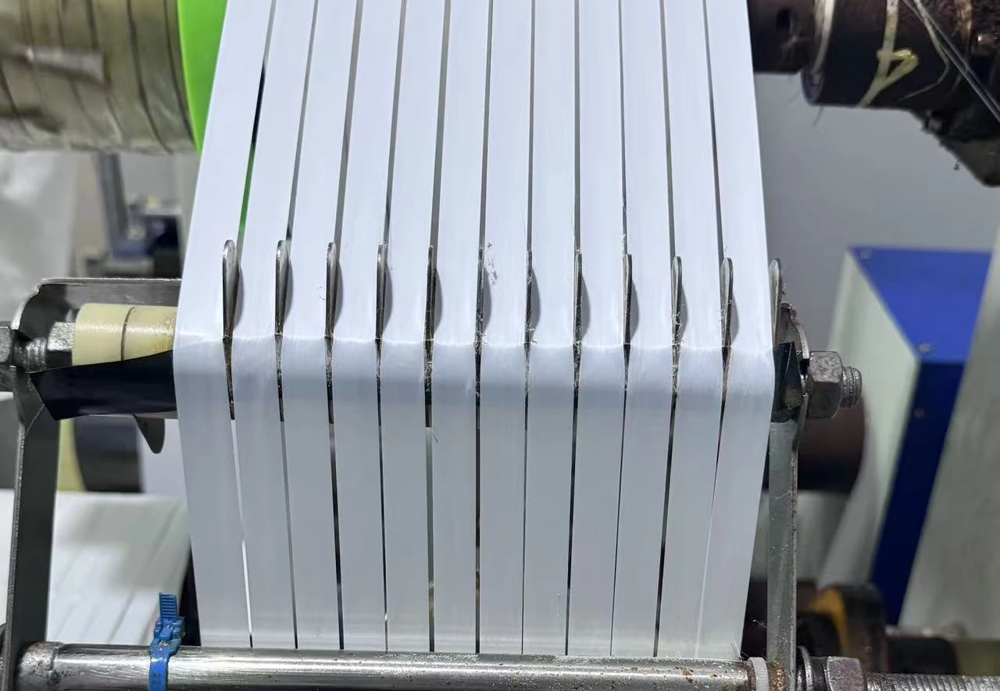

TAPE SPECIFICATION
Compare the same numbers,
on the same basis.
A roll can look similar while its specification differs. Define the tape dimensions and weight basis clearly.
- Width, length & thickness
- Confirm the target dimensions, measurement method and agreed tolerances.
- Tape weight & density
- State the required basis. Clarify whether a weight includes the spool and cover.
- Reference for review
- Use the approved specification or sample when discussing measurement results.